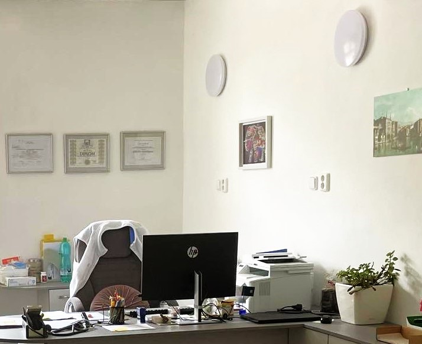
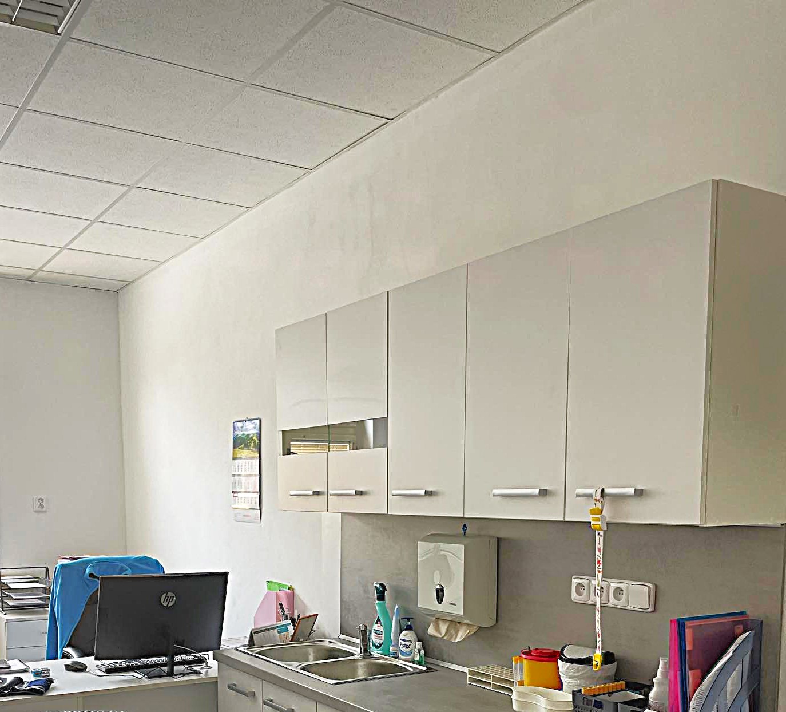
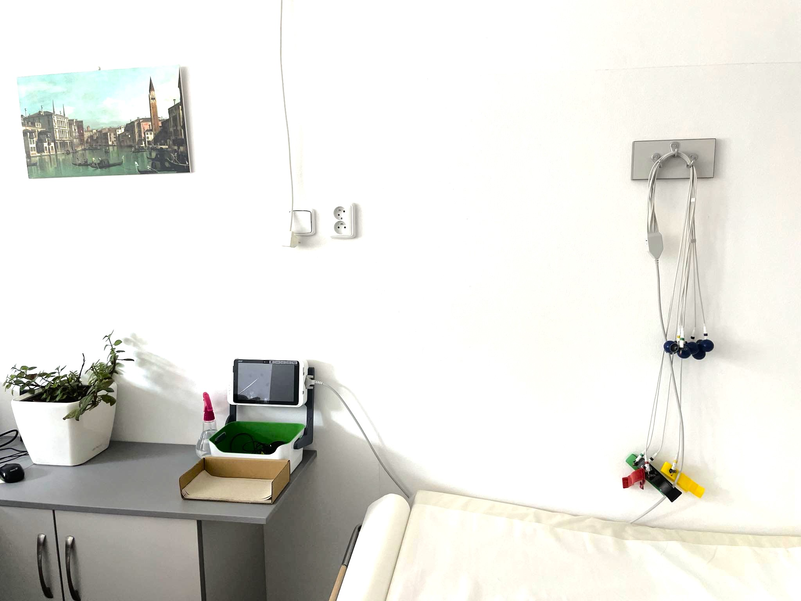

Na sídle Interna TU, s.r.o., Hornova 951, Střední Předměstí, 541 01 Trutnov, uvedeném zde v obchodním rejstříku firem, není ordinace ani žádná jiná činnost provozována, pouze na adrese Říční 102, 541 01 Trutnov.